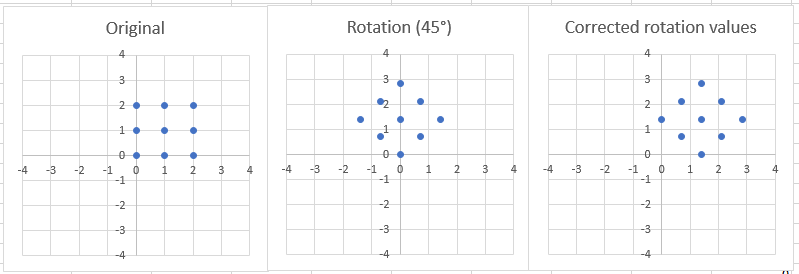

Arbitrary Image Rotation using Shearing
A description of the Paeth Algorithm, 14.06.2019

In the modern world of image processing, nobody thinks about about “simple” tasks
such as
the rotation,shearing or mirroring of an image because such functions have become so standardized,
that even
the simplest photoviewers include them. Nevertheless, besides their abundance, a lot of programmers
do not know the underlying algorithms...
 SilMon's Blog
SilMon's Blog